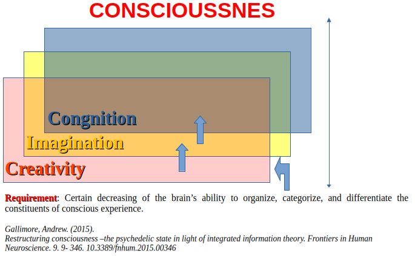

Consciousness and DMT

In TACE (Tegmark–Aquinas Conceptual Ecosystem),
human consciousness is not reducible to either physical processes (see below for the precise meaning of this term, along with that of the matter substrate as the deepest layer of the Physic realm) or neuropsychic activity. In TACE, both the soul and the neuropsyche are immaterial; however, the neuropsyche is also neuroquantical, that is, meaning it manifests physically as the interface between the soul and the Q-pseudomaterial brain substances – read below. Accordingly, consciousness is the faculty (29–43)
of an immaterial form endowed with intentionality—or soul in humans—which grounds and informs neuropsychic processes rather than emerging from them.
Qualia vs matter
From now on, the Aristotelian–Thomistic material substrate shall be designated Q-form, understood as the force substrate to actualize mathematical vectors for the space–time. The entities traditionally called material substances are better described as Q-pseudomaterial substances. Thus, in TACE, what is now called physical matter is not given directly, because the supposedly “material objects” of physics (mass, volume, motion, etc.) are only raw data objects actualized by the Matrix (Q-pseudomaterial substances). These may eventually become neuropsychical signal structures, mathematically morphed by the soul-neuropsyche from outer sensorial signals such as photons.
Accordingly, Q-pseudomaterial substances correspond to potential Qualia(1) within the neuropsyche, whereas Q-substances correspond to Qualiaactual (2) as instantiated in human consciousness.
Fields: things vs abstractions
Quantum fields, such as the gluon–quark field, are raw Q-pseudomaterial substances that reveal determinate properties only upon actualization, thereby manifesting the mathematical structures of physical reality; in the absence of perturbations, they remain purely potential.
What we perceive as ‘material behavior’ is Q-form actualized by a form; that is, the ‘formal behavior’ of a raw pseudomaterial substance. Moreover, Q-form undergoes a relational actualization that shapes the mode of knowledge, that depends on what is required by the species of being in its ecological context to exist and function: humans and animals (neuropsychic transformation), plants (organic transformation), angels (ontological transformation), or other intelligences. Q-form itself, however, does not change, and its nature is irrelevant to human knowledge. By contrast, the nature of God (being), angels (beings), intellectual forms, and other immaterial entities is epistemically relevant and therefore intelligible, existing as sole forms, without Q-form.
See in [Diaspora](https://diaspora.psyco.fr/posts/2a985e80dcdb013e6ae67a163edde882) an illustrative text discussing those two aspects
Science has been unable to explain the true nature of "matter", since its empiricism treats the electromagnetic field as a mathematical abstraction, considers it immaterial, and regards photons merely as disturbances of that field propagating as waves—waves of what, exactly, remains unexplained. Accordingly, in TACE, the Matrix—which underlies every "physical" field—is an axiom (or postulate): neither Q-form nor substance, nor any composite of them, but the fundamental structural form through which pure potentiality inherited from Prime Matter becomes capable of formal differentiation, multiplicity, and temporal order. In this way, the Matrix grounds the plurality of forms—both material and immaterial—and encompasses quantized material substances together with their corresponding forms, from which the formal coherence and intelligibility of the universe are derived.
The Matrix is neither:
It is:
Accordingly, it is non-local, not spatially extended, but operative through its creative potentiality. Thus, it is universally operative at all times, without being spatially extended or temporally localized.
a substance
a composite
a mixture
a chimera
a composite
a mixture
a chimera
It is:
an axiomatic structural principle
a condition of formal intelligibility
a ground of actualization without itself being actualized as a being
a condition of formal intelligibility
a ground of actualization without itself being actualized as a being
Accordingly, it is non-local, not spatially extended, but operative through its creative potentiality. Thus, it is universally operative at all times, without being spatially extended or temporally localized.